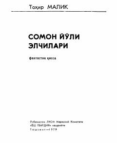

SYO'zga sayyoraliklar tashrifi va insoniyat taqdiri haqidagi qiziqarli fantastik qissa.
Ushbu asar o'zga sayyoraliklar kemasining yerga qo'nishi va insoniyat hayotiga ta'siri haqidagi fantastik qissadir. Voqealar rivoji qadimiy shahar aholisining kutilmagan hodisalar qarshisida qolishi va o'zga sayyora elchilari bilan to'qnashuvi atrofida kechadi.